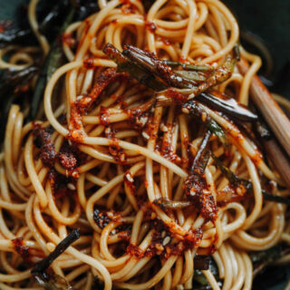

Scallion Oil Noodle

Ingredients
- 1.5 cup cooking oil , vegetable oil or lard
-
Green onions , skinny scallion, cut into long segments around 5 cm long
- 2 servings yellow alkaline noodle , or thin ramen noodles
- Mix seasoning sauce (for two servings)
- 1 tsp. sugar
- 1 tsp. dark soy sauce (OPTIONAL for darker color)
- 2 tbsp. light soy sauce
- 1 tsp. oyster sauce
Instructions
-
Cut the green onions into sections around 5-8 cm long. Add garlic clove
into pieces and cut 4 slices of ginger.
-
Add oil in a wok, add garlic, scallion white and ginger along with the
oil. Heat over high fire until the white part becomes slightly browned.
-
Add green onion sections. Simmer until the green onion section becomes
crispy and browned.
-
Remove from heat and then add 1 tablespoon of Sichuan peppercorn. Let
the remaining heat from the oil motivating the aroma. Then cool down.
-
Cook the noodle and then soak in clean water. Drain completely and then
add 1.5 tablespoons of the scallion oil. Mix well.
-
Add the basic sauce in. Mix well. This is for 2 servings of noodles. And
lastly, top with crispy scallion. Optionally, drop 1 teaspoon of Chili
oil. Serve directly.